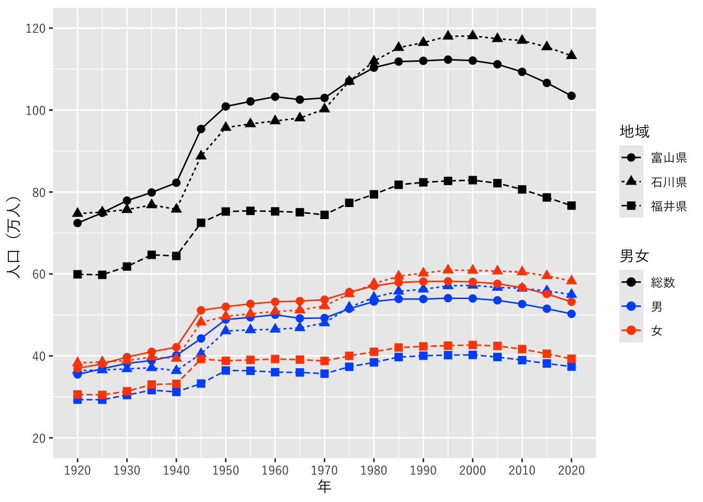
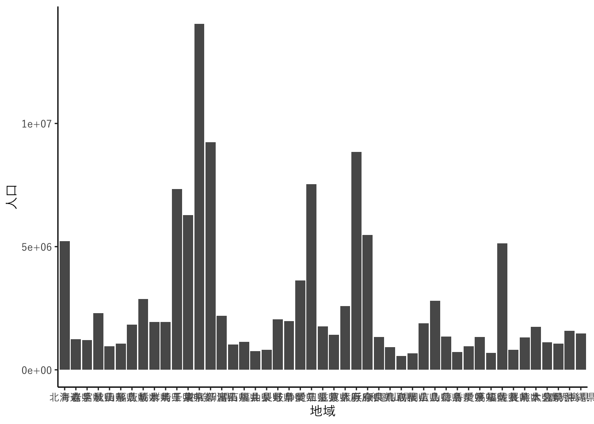
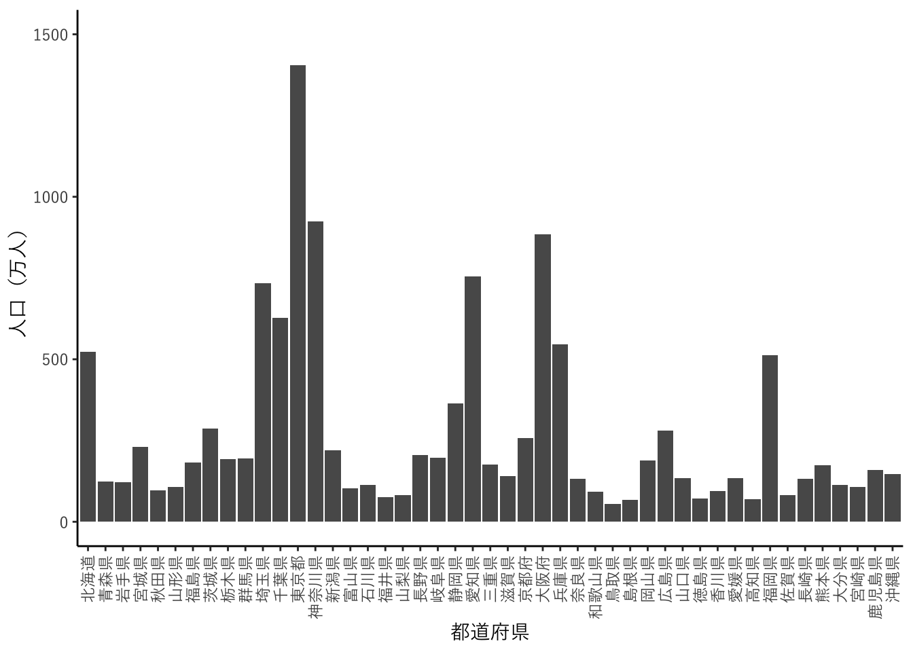
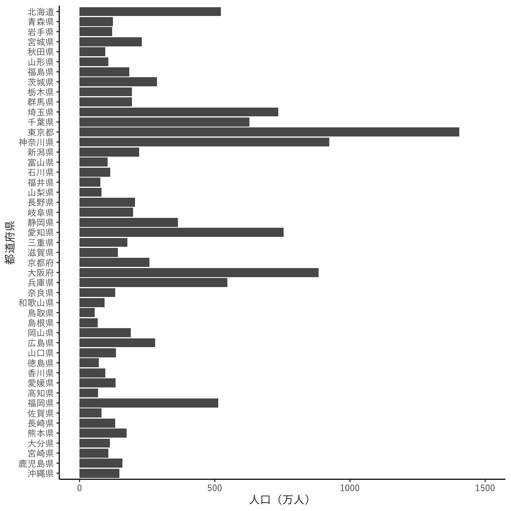
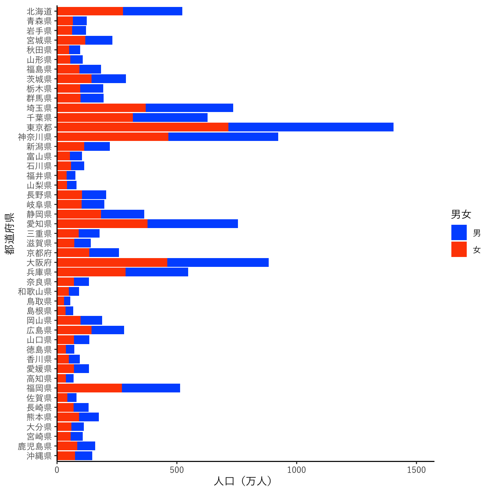

library(tidyverse)
data_path <- file.path("data", "FEH_00200521_241003100519.csv")5 データの読み込みからグラフ作成まで
この章では、RStudioを使用して、データを読み込み、グラフを作成するまでをスクリプトにまとめる過程を紹介します。
5.1 プロジェクトの作成
File > New Project… を選択し、新しいプロジェクトを作成します。 開いたダイアログで、New Directoryを選択し、さらにNew Projectを選択します。 ディレクトリ名はここではdata_import_plotとします。別の名前でも構いませんが、分かりやすい名前にしておくのがよいでしょう。ここまでの流れは セクション 2.2.1 のとおりです。
5.2 データのダウンロードと読み込み
5.2.0.1 ダウンロード
データとして、国勢調査のデータを使用します。e-statの「国勢調査/時系列データ/男女，年齢，配偶関係/男女別人口及び人口性比 － 全国，都道府県（大正9年～令和2年）」からCSV（列指向データ）をダウンロードします。筆者がダウンロードしたものがGitHubのレポジトリにありますので（https://github.com/ito4303/KanazawaR002/raw/refs/heads/main/data/FEH_00200521_241003100519.csv）、こちらも利用可能です。ダウンロードしたファイルは、プロジェクトのディレクトリの下にdataディレクトリをつくって、そこに保存しておきます。
実際のデータ解析プロジェクトでは、多数のファイルやRスクリプトが使用されることもあります。そのような場合は、プロジェクトのディレクトリの下に、データ以外にも用途別のサブディレクトリをつくっておくとよいでしょう。例えば、Rスクリプトはscriptsディレクトリに、出力ファイルはoutputsディレクトリに、といった具合です。
5.2.0.2 読み込み
ダウンロードしたファイルをreadrパッケージのread_csv関数を使ってRに読み込ませます。
実際にファイルを読み込む前に、まず、この後のデータの整形や可視化でも使用するのでtidyverseパッケージを読み込んでおきます。
つづいて、fie.path関数で、使用するシステムに応じたファイルパスを作成して、data_path変数に入れておきます。ファイル名がFEH_00200521_241003100519.csvでなければ、ファイル名に合わせて変更してください。
read_csv関数で、上で定義したファイルパス(data_path)からファイルを読み込んで、pref_dataというオブジェクトに格納します。ここで使用している、read_csv関数のその他の引数は、以下のとおりです。
col_types: 各列の型です。1文字ごとに1列に対応します。文字は以下のように型に対応します。- c: 文字
- d: 倍精度実数
- f: 因子
na: データファイル中で欠測（データなし）を表す文字です。このファイルでは”-“が欠測値を表すので、これを指定しています。locale: 言語や地域に依存する設定です。ここでは文字コードに”CP932 “（Shift_JIS）を指定するようにしています。
pref_data <- read_csv(file = data_path,
col_types = "fcfcfccccd",
na = "-",
locale = locale(encoding = "CP932"))ちなみに、Excelファイルの場合は、readxlパッケージのread_excel関数が利用可能です。
read_csv関数で読み込んだデータを確認します。head関数で、先頭の5行を表示します。
head(pref_data, n = 5)# A tibble: 5 × 10
tab_code 表章項目 cat01_code 男女_時系列 area_code 地域_時系列 time_code
<fct> <chr> <fct> <chr> <fct> <chr> <chr>
1 020 人口 100 総数 00000 全国 1920000000
2 020 人口 100 総数 00000 全国 1925000000
3 020 人口 100 総数 00000 全国 1930000000
4 020 人口 100 総数 00000 全国 1935000000
5 020 人口 100 総数 00000 全国 1940000000
# ℹ 3 more variables: `時間軸（調査年）` <chr>, unit <chr>, value <dbl>5.3 データの整形
読み込んだデータのうち、後で使うところだけを残します。これには以下のような処理をおこないます。
pref_popl <- pref_data |>
dplyr::filter(`表章項目` == "人口" &
!(`地域_時系列` %in% c("人口集中地区",
"人口集中地区以外の地区"))) |>
dplyr::mutate(`男女` = factor(`男女_時系列`,
levels = c("総数", "男", "女")),
`地域` = factor(`地域_時系列`,
levels = unique(pref_data$`地域_時系列`)),
`年` = as.numeric(str_sub(time_code, 1, 4)),
`人口` = value,
.keep = "none")順を追って説明します。まず、人口だけが必要なので、dplyrパッケージのfilter関数を使って、表章項目列が”人口”で、なおかつ（&は論理積の演算子です）、地域_時系列列が”人口集中地区”あるいは”人口集中地区の地区”ではない行を残しています。filter関数は、データフレームのうち、条件に合致する行だけを残すというものです。また、%in%演算子は、左辺の値が、右辺のベクトルの要素であればとTRUE、そうでなければFALSEの値を返すというものです。!は否定の単項論理演算子です。
なお、dplyrパッケージはtidyverseパッケージに含まれているので、ここであらためて読み込む必要はありません。
ここまで処理したデータをパイプ演算子（|>）で次の処理に渡します。これは、式の計算結果を次の関数の第1引数として与えるという演算子です。
次は列の処理です。これにはdplyrパッケージのmutate関数を使用します。この関数は、新しい列を追加するという機能をもっています。
まず、男女_時系列列の値を因子型に変換し、男女という列（変数）を作成します。地域_時系列列の値も因子型に変換し、地域という列を作成します。さらに、time_code列のそれぞれの値から、str_sub関数で最初の4文字を抽出し、as.numeric関数で数値に変換し、新しい列の年を作成しました。人口の値valueも新しい列人口に格納しました。そのうえで、これら以外の列は捨てるようにします。mutate関数の最後の引数で.keep = "none"としていますが、こうすると、この関数の中で定義した列だけが残るようになります。
このようにして整理させたデータを最終的にpref_poplに代入します。
5.3.1 整形結果
必要な部分だけを残すと以下のようになりました。head関数で最初の5行を表示して、確認します。
head(pref_popl,n = 5)# A tibble: 5 × 4
男女 地域 年 人口
<fct> <fct> <dbl> <dbl>
1 総数 全国 1920 55963053
2 総数 全国 1925 59736822
3 総数 全国 1930 64450005
4 総数 全国 1935 69254148
5 総数 全国 1940 731143085.4 ggplot2による可視化
ここからデータをグラフにしていきます。グラフ作成のためここではggplot2パッケージを使用します。ggplot2パッケージもtidyverseに含まれているので、あらためて読み込む必要はありません。データには、先に読み込んで整形した都道府県の人口データを使用します。
グラフ作成の前に、使用する日本語フォントを変数にいれておきます。この部分はシステムやお好みで適宜変えてください。このように変数にいれておくと、この部分だけ変更することで、あとのグラフのフォントを一括で変更することができます。
今回はYuGothicを使用しましたが、お好みのフォントを利用してください。ヒラギノフォントでしたら”Hiragino Sans”、Notoフォントでしたら、“Noto Sans JP”などとすればよいでしょう。
jp_font <- "YuGothic"
#jp_font <- "Hiragino Sans"
#jp_font <- "Noto Sans JP"参考までに、利用可能なフォントの一覧は、systemfontsパッケージのsystem_fonts関数で得ることができます。以下は、筆者の環境（macOS 15.5）で、family列に”Hiragino”を含む行の、name、family、style列を抽出した結果です。
systemfonts::system_fonts() |>
dplyr::filter(str_detect(family, "Hiragino")) |>
dplyr::select(name, family, style)# A tibble: 17 × 3
name family style
<chr> <chr> <chr>
1 HiraginoSans-W4 Hiragino Sans W4
2 HiraginoSans-W1 Hiragino Sans W1
3 HiraginoSans-W8 Hiragino Sans W8
4 HiraginoSansGB-W6 Hiragino Sans GB W6
5 HiraginoSans-W5 Hiragino Sans W5
6 HiraginoSansGB-W3 Hiragino Sans GB W3
7 HiraginoSans-W2 Hiragino Sans W2
8 HiraMinProN-W3 Hiragino Mincho ProN W3
9 HiraginoSans-W9 Hiragino Sans W9
10 HiraginoSansCNS-W3 Hiragino Sans CNS W3
11 HiraMinProN-W6 Hiragino Mincho ProN W6
12 HiraginoSans-W6 Hiragino Sans W6
13 HiraginoSans-W3 Hiragino Sans W3
14 HiraMaruProN-W4 Hiragino Maru Gothic ProN W4
15 HiraginoSansCNS-W6 Hiragino Sans CNS W6
16 HiraginoSans-W0 Hiragino Sans W0
17 HiraginoSans-W7 Hiragino Sans W7 5.4.1 折れ線グラフ
まず、全国の人口総数データを時系列で表示します。時系列データの可視化には折れ線グラフを使用します。
dplyrパッケージのfilter関数で、地域 == "全国", 男女 == "総数"と指定して、グラフに必要な行だけに絞り込みます。filter関数で引数をコンマでつなげると、論理積（&）と同じになります。
all_popl <- pref_popl |>
dplyr::filter(`地域` == "全国", `男女` == "総数")つづいて、グラフを作成します。ggplot関数は、グラフのオブジェクトの初期化をおこなう関数です。data引数に、使用するデータのall_poplを与えます。mapping引数にはaes(x = `年`, y = `人口`)という関数の値を与えています(aes = aesthetic mappings)。これにより、X軸に年、Y軸に人口をマッピングすると指定しています。
ggplot2では、“+”演算子で、レイヤー（層）を追加していってグラフを完成させるようになっています。次の行のgeom_line関数で折れ線グラフを描画します。
ggplot(data = all_popl, mapping = aes(x = `年`, y = `人口`)) +
geom_line()これでもグラフは作成されますが、さらに見やすくなるようにしていきます。具体的には以下のようにしました。
geom_pointで、点も加えます。scale_x_continuousとscale_y_continuousで軸の表示を調整します。theme_grayで、テーマの設定とフォントの設定をおこないます。
ggplot(all_popl, aes(x = `年`, y = `人口`)) +
geom_line() + geom_point() +
scale_x_continuous(breaks = seq(1920, 2020, by = 10)) +
scale_y_continuous(name = "人口（人）",
breaks = seq(6e+7, 12e+7, by = 2e+7),
labels = c("6000万", "8000万", "1億", "1億2000万")) +
theme_gray(base_family = jp_font)
次に全国のデータを、総数・男・女の別に表示します。
まず、dplyr::filter関数で全国のデータだけ残します。この関数の返り値をパイプ演算子で次の行のggplot関数に渡しています。
ggplot関数のmapping引数では、aes関数でcolour = `男女`と引数を与えることで、男女列の要素別に色分けして線を引きます。また、scale_colour_manualで各要素の色を指定しています（カラーユニバーサルデザイン対応の色にしています）。
pref_popl |>
dplyr::filter(`地域` == "全国") |>
ggplot(aes(x = `年`, y = `人口`, colour = `男女`)) +
geom_line() + geom_point(size = 2.5) +
scale_colour_manual(values = c("#000000", "#005aff", "#ff4b00")) +
scale_x_continuous(breaks = seq(1920, 2020, 10)) +
scale_y_continuous(name = "人口（人）",
breaks = seq(4e+7, 12e+7, 2e+7),
labels = c("4000万", "6000万", "8000万", "1億", "1億2000万")) +
theme_gray(base_family = jp_font)つづいて、富山県・石川県・福井県のデータを、総数・男・女の別に表示します。dplyr::filter関数で、この3県のデータだけを抽出しています。aes関数の引数で”shape = `地域`, linetype = `地域`“とすることで、県別に点の形と線の種類を変えることができます。
scale_y_continuous関数では、Y軸の目盛りを、2×105から12×105の間で、2×105刻みとすること、表示されるラベルは104（=1万）単位とすることを指定しています。
pref_popl |>
dplyr::filter(`地域` %in% c("富山県", "石川県", "福井県")) |>
ggplot(aes(x = `年`, y = `人口`, colour = `男女`,
shape = `地域`, linetype = `地域`)) +
geom_line() + geom_point(size = 2.5) +
scale_colour_manual(values = c("#000000", "#005aff", "#ff4b00")) +
scale_x_continuous(breaks = seq(1920, 2020, 10)) +
scale_y_continuous(name = "人口（万人）",
limits = c(2e+5, 12e+5),
breaks = seq(2e+5, 12e+5, by = 2e+5),
labels = \(x) x / 1e+4) +
theme_gray(base_family = jp_font)
5.4.2 積み上げ折れ線グラフとグラフの分割
一応目的のグラフは描けましたが、これでは煩雑なので、グラフを分けて積み上げ折れ線グラフにします。
まず、dplyr::filter関数で、男女列が”男”または”女”であり、かつ地域列この3県のデータだけを抽出しています。
続いて、グラフを作成します。geom_area関数で積み上げグラフを描画します。また、annotate関数でグラフに直接説明を書き込みました。
最後に、facet_wrap関数を使って各県のグラフを分割して描くようにしています。引数で~`地域` とすることで、各県のグラフを分割するように指定しています。また、nrow = 2 で、グラフを2行にして描画することを指定しています。
pref_popl |>
dplyr::filter(`男女` %in% c("男", "女"),
`地域` %in% c("富山県", "石川県", "福井県")) |>
ggplot(aes(x = `年`, y = `人口`, fill = `男女`)) +
geom_area() +
annotate("text", x = 2000, y = 3e+5, label = "女", colour = "white") +
annotate("text", x = 2000, y = 7.2e+5, label = "男", colour = "white") +
scale_x_continuous(breaks = seq(1920, 2020, 20)) +
scale_y_continuous(name = "人口（万人）",
limits = c(0, 12e+5),
breaks = seq(0, 12e+5, by = 2e+5),
labels = \(x) x / 1e+4) +
scale_fill_manual(values = c("#005aff", "#ff4b00")) +
theme_gray(base_family = jp_font) +
facet_wrap(~`地域`, nrow = 2)5.4.3 散布図
次に、都道府県ごとに、2020年の男女の人口を比較するグラフを作成します。これには散布図を使用します。
そのため、まずデータを変形します。pref_poplの男女列には、“総数”、“男”、“女”の3つの値が含まれていますが、これを別々の列に分けるようにします。これにはtiydrパッケージのpivot_wider関数を使用します。names_from引数には、新しい列となる値を含む列を指定します。ここでは男女列です。また、values_from引数には、新しい列の値となる値を含む列を指定します。ここでは人口列です。
pref_popl_wide <- pref_popl |>
tidyr::pivot_wider(names_from = "男女", values_from = "人口") |>
dplyr::filter(`地域` != "全国", `年` == 2020)このようになります。
head(pref_popl_wide)# A tibble: 6 × 5
地域 年 総数 男 女
<fct> <dbl> <dbl> <dbl> <dbl>
1 北海道 2020 5224614 2465088 2759526
2 青森県 2020 1237984 583402 654582
3 岩手県 2020 1210534 582952 627582
4 宮城県 2020 2301996 1122598 1179398
5 秋田県 2020 959502 452439 507063
6 山形県 2020 1068027 516438 551589グラフにします。geom_pointで散布図を作成します。aes関数で、X軸に男、Y軸に女をマッピングするように指定しています。テーマはtheme_bwにしました。
ggplot(pref_popl_wide, aes(x = `男`, y = `女`)) +
geom_point() +
theme_bw(base_family = jp_font)見ばえを整えます。以下のレイヤーを加えました。
“
geom_abline(linetype = 2, slope = 1, intercept = 0)”で、X=Yの点線を引きます。scale_x_continuousとscale_y_continuous関数で、それぞれX軸とY軸の名前と軸の描き方を指定します。軸は、0〜800万人の範囲で、200万人ごとに目盛りをつけ、ラベルの単位を1万人とするようにしています。“
coord_fixed(ratio = 1)”で、X軸とY軸の比を1:1に設定します。
ggplot(pref_popl_wide, aes(x = `男`, y = `女`)) +
geom_abline(linetype = 2, slope = 1, intercept = 0) +
geom_point(size = 3, alpha = 0.6) +
scale_x_continuous(name = "男性人口（万人）",
limits = c(0, 8e+6),
breaks = seq(0, 8e+6, by = 2e+6),
labels = \(x) x / 1e+4) +
scale_y_continuous(name = "女性人口（万人）",
limits = c(0, 8e+6),
breaks = seq(0, 8e+6, by = 2e+6),
labels = \(x) x / 1e+4) +
coord_fixed(ratio = 1) +
theme_bw(base_family = jp_font)5.4.4 棒グラフ
続いて、各都道府県の2020年の人口総数をグラフにします。これには棒グラフを使用します。
まず、pref_poplからfilter関数で必要な行を取り出します。`地域` != "全国" とすることで、地域列の値が”全国”以外（!= は「不等」を意味する比較演算子です）、すなわち各都道府県の行を残すようにします。さらに、`男女` == "総数" と `年` == 2020 とコンマで区切って続けて、人口総数の2020年の行だけを残しています。
geom_colは棒グラフを描画する関数です。テーマはtheme_classicを使用しました。
pref_popl |>
dplyr::filter(`地域` != "全国", `男女` == "総数", `年` == 2020) |>
ggplot(aes(x = `地域`, y = `人口`)) +
geom_col() +
theme_classic(base_family = jp_font)
ひとまずグラフができましたが、みばえがいまひとつなので、改良していきます。
まず、横軸のラベルが重なっていて読めないので、scale_x_discrete関数で”guide = guide_axis(angle = 90)“と指定して、ラベルを90°回転させます。また、scale_y_continuous関数で、横軸の表示を整えます。
pref_popl |>
dplyr::filter(`地域` != "全国", `男女` == "総数", `年` == 2020) |>
ggplot(aes(x = `地域`, y = `人口`)) +
geom_col() +
scale_x_discrete(name = "都道府県", guide = guide_axis(angle = 90)) +
scale_y_continuous(name = "人口（万人）",
limits = c(0, 1.5e+7),
breaks = seq(0, 1.5e+7, 5e+6),
labels = \(x) x / 1e+4) +
theme_classic(base_family = jp_font)
このグラフは横にしたほうが見やすいかもしれません。そうするには、coord_flip()を使います。そうすると、縦軸が下から並ぶようになるので、scale_x_discrete関数で、limits = revとして、上から並ぶようにさせます。
pref_popl |>
dplyr::filter(`地域` != "全国", `男女` == "総数", `年` == 2020) |>
ggplot(aes(x = `地域`, y = `人口`)) +
geom_col() +
scale_x_discrete(name = "都道府県", limits = rev) +
scale_y_continuous(name = "人口（万人）",
limits = c(0, 1.5e+7),
breaks = seq(0, 1.5e+7, 5e+6),
labels = \(x) x / 1e+4) +
coord_flip() +
theme_classic(base_family = jp_font)
都道府県名のラベルと、横軸の0との間の隙間が気になるので、ここを詰めるようにします。これには、scale_y_continuous関数で、expand = expansion(mult = c(0, 0.05))と指定します。
pref_popl |>
dplyr::filter(`地域` != "全国", `男女` == "総数", `年` == 2020) |>
ggplot(aes(x = `地域`, y = `人口`)) +
geom_col() +
scale_x_discrete(name = "都道府県", limits = rev) +
scale_y_continuous(name = "人口（万人）",
limits = c(0, 1.5e+7),
breaks = seq(0, 1.5e+7, 5e+6),
labels = \(x) x / 1e+4,
expand = expansion(mult = c(0, 0.05))) +
coord_flip() +
theme_classic(base_family = jp_font)男女別の積み上げ棒グラフにします。filter関数で必要な行を取り出しますが、今回は `男女` != "総数" として、男女列の値が総数でない、すなわち”男”か”女”の行を抽出しています。地域と年は前と同様です。
積み上げ棒グラフを作成するには、geom_col関数の引数でposition = "stack"とします（これはデフォルトの動作です）。また、scale_fill_manual(values = c("#005aff", "#ff4b00"))で色も指定します。
pref_popl |>
dplyr::filter(`地域` != "全国", `男女` != "総数", `年` == 2020) |>
ggplot(aes(x = `地域`, y = `人口`, fill = `男女`)) +
geom_col(position = "stack") +
scale_fill_manual(values = c("#005aff", "#ff4b00")) +
scale_x_discrete(name = "都道府県", limits = rev) +
scale_y_continuous(name = "人口（万人）",
limits = c(0, 1.5e+7),
breaks = seq(0, 1.5e+7, 5e+6),
labels = \(x) x / 1e+4,
expand = expansion(mult = c(0, 0.05))) +
coord_flip() +
theme_classic(base_family = jp_font)
5.5 まとめ
この章では、データの読み込みから可視化までの過程を説明しました。
データの読み込みについてさらに詳しく知るには、どちらも英語ですが、R for Data Science の Data import や、R公式マニュアルの R Data Import/Export が役に立つでしょう。
ggplot2については、こちらもともに英語ですが、公式の解説書のウェブ版 ggplot2: Elegant Graphics for Data Analysis (3e) や Cheatsheet が参考になると思います。